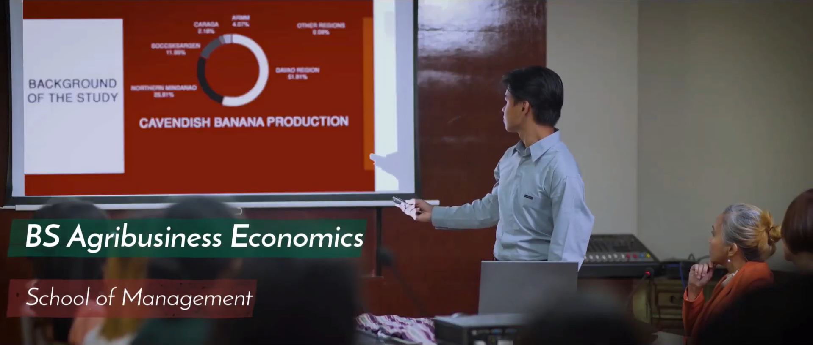

On June 1996, the College of Arts and Sciences and the School of Management were created. After a year,
the CAS was split into the College of Humanities and Social Sciences and the College of Science and Mathematics.
The School of Management was retained.
SPECIALIZATION
The UP Mindanao School of Management (SOM) undertakes research on supply chain management and agribusiness economics.

Offered Degree Programs
The UP Mindanao School of Management offers one undergraduate degree program and two graduate degree programs.
Its degree programs are the Bachelor of Arts in Agribusiness Economics (BSABE), one of its kind in the Philippines,
Master in Management, and PhD by Research.
 HOME
HOME ACADEMIC UNITS
ACADEMIC UNITS ACADEMIC PROGRAMS
ACADEMIC PROGRAMS SIGNUP
SIGNUP